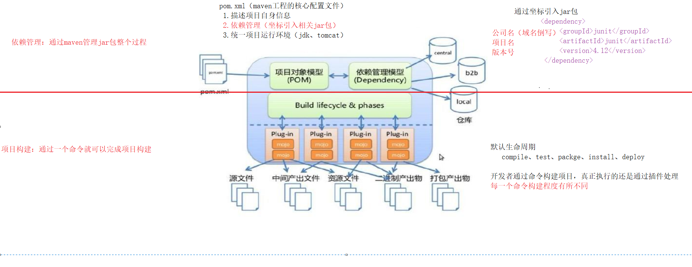

- maven基础与环境搭建
一.Maven简介
1.1 Maven是什么
Maven 是一个项目管理工具，它包含了一个项目对象模型 (POM:Project Object Model)，一组标准集合，一个项 目生命周期(Project Lifecycle)，一个依赖管理系统(Dependency Management System)，和用来运行定义在生命周 期阶段(phase)中插件(plugin)目标(goal)的逻辑。
1.2 Maven能解决什么问题
一种工具，可以构建工程，管理 jar包，编译代码，还 能帮你自动运行单元测试，打包，生成报表，部署项目，生成 Web 站点。
1.3 Maven的两个核心功能
1.3.1 依赖管理
Maven的一个核心特性就是依赖管理。MVN依赖管理，就是一个管理jar包的过程
| CRM项目 使用mvn工程实现 |
➡项目中给定坐标，去仓库拉取jar包➡ 索引的存在，使拉取jar包过程，可以认为是自己项目中有的 |
MVN仓库 jar的仓库 |
|---|---|---|
| 坐标:将来要找某个jar包，就是要确定这个jar包的坐标 | ||
| jar包如何给出坐标:公司/组织名+项目名+版本号一起确定 |
maven工程中不直接将jar包导入到工程中，而是通过在pom.xml文件中添加所需jar包的坐标，避免了jar直接引入进来，在需要用到jar包的时候，只要查找pom.xml文件，再通过pom.xml文件中的坐标，到一个专门用于”存放jar包的仓库”(maven仓库)中根据坐标从而找到这些jar包，再把这些jar包拿去运行。
通过读取pom.xml 文件中的坐标，再到仓库中找到jar包，会不会很慢
通过pom.xml文件配置要引入的jar包的坐标，再读取坐标并到仓库中加载jar包，这样我们就可以直接使用jar包，为了解决这个过程中速度慢的问题，maven中也有索引的概念，通过建立索引，可以大大提高加载jar包的速度，使得我们认为jar包基本跟放在本地的工程文件中再读取出来的速度是一样的。
1.3.2 项目构建
什么是项目构建
项目从编译、测试、运行、打包、安装 ，部署整个过程都交给maven进行管理，这个过程称为构建。
一键构建 指的是整个构建过程，使用maven一个命令可以轻松完成整个工作。
Maven规范化构建流程
清理 ➡ 编译 ➡ 测试 ➡ 报告 ➡ 打包 ➡ 部署
二 Maven安装和使用
2.1 Maven下载和安装
2.1.1 Maven下载
Maven官网下载地址:http://maven.apache.org/download.cgi
目前使用@3.5版本
2.1.2 Maven安装
将apache-maven-3.5.2-bin.zip解压并添加至path
maven目录结构
目录 介绍 bin 存放了 maven 的命令 boot 存放了一些 maven 本身的引导程序，如类加载器等 conf 存放了 maven 的一些配置文件，如 setting.xml 文件 lib 存放了 maven 本身运行所需的一些 jar 包 1
2
3
4
5
6
7
8
9
10
11
12
13
14
15
16
17
18
19
20
21
22
23apache-maven-3.5.2
├── LICENSE
├── NOTICE
├── README.txt
├── bin
│ ├── m2.conf
│ ├── mvn
│ ├── mvn.cmd
│ ├── mvnDebug
│ ├── mvnDebug.cmd
│ └── mvnyjp
├── boot
│ └── plexus-classworlds-2.5.2.jar
├── conf
│ ├── logging
│ ├── settings.xml
│ └── toolchains.xml
└── lib
├── aopalliance-1.0.jar
├── ...省略
└── wagon-provider-api.license
7 directories, 91 files
2.1.3 Maven及JDK配置
Maven 3.3+ require JDK 1.7 or above to execute - they still allow you to build against 1.3 and other JDK versions by Using Toolchains
配置PATH
1
2
3
4
5vi .zshrc
#MAVEN_HOME
export MAVEN_HOME=/Users/swzxsyh/Program/apache-maven-3.5.2
export PATH=$PATH:$MAVEN_HOME/bin
2.1.4 Maven软件版本测试
1 | ~ #mvn -v |
2.3 Maven仓库
2.3.1 Maven仓库的分类
Maven仓库分为本地仓库和远程仓库二大类。而远程仓库又可分成中央仓库，私服，第三方仓库。
| Maven仓库 | ||
|---|---|---|
| 本地仓库 | 远程仓库 | |
| ⬇ | ||
| 中央仓库 | ||
| 私服 | ||
| 第三方公共库 |
依赖寻找流程
在本地仓库中，根据Maven坐标系寻找指定依赖，如果存在，直接返回。
如果Maven仓库中不存在，或者需要检查依赖的版本时，maven则会去远程仓库中寻找，下载到本地仓库中再使 用。
本地仓库
用来存储从远程仓库下载的插件和jar包，项目使用一些插件或jar包，优先从本地仓库查找。
中央仓库
在maven软件中内置一个远程仓库地址http://repo1.maven.org/maven2 ，它是中央仓库，服务于整个互联网，它是由Maven团队自己维护，里面存储了非常全的jar包，它包含了世界上大部分流行的开源项目构件。
第三方公共库
Maven 仓库默认中央仓库在国外且只有一个， 国内使用难免很慢，我们可以更换为第三方公共库，例如:阿里云镜 像。
私服
私服是一种特殊的远程仓库，其内容是来自于其他的远程仓库，一般架设在局域网内，提供给一个组织的人员使用。 当Maven需要下载依赖时，从私服请求，如果私服上不存在该依赖，则从其他远程仓库下载，同时缓存在私服上，提 供给其他人使用。如果项目中的一些内部模块，无法发布到外部远程仓库中，也可发布在私服上，提供给项目中的其 他人员使用。
2.3.2 Maven本地仓库的配置
1 | cd $MAVEN_HOME/conf |
2.3.4 Maven仓库国内镜像配置
1 | <mirrors> |
2.3.4 全局setting与用户setting
maven仓库地址、私服等配置信息需要在setting.xml文件中配置，分为全局配置和用户配置。
在maven安装目录下 的有 conf/setting.xml文件，此setting.xml文件用于maven的所有project项目，它作为maven的全局配置。 如需要 个性配置则需要在用户配置中设置，用户配置的setting.xml文件默认的位置在:${user.dir} /.m2/settings.xml目录 中,${user.dir} 指windows 中的用户目录。
maven会先找用户配置，如果找到则以用户配置文件为准，否则使用全 局配置文件。
2.3 Maven坐标和依赖
Maven的一个核心的作用就是管理项目的依赖，引入我们所需的各种jar包等。为了能自动化的解析任何一个Java构 件，Maven必须将这些Jar包或者其他资源进行唯一标识，这是管理项目的依赖的基础，也就是我们要说的坐标。包 括我们自己开发的项目，也是要通过坐标进行唯一标识的，这样才能才其它项目中进行依赖引用。
坐标的定义元素如下
元素 作用 groupId 定义当前Maven项目名称 artifactId 定义项目模块 version 定义当前项目的当前版本 例如
创建一个Maven的web项目，在pom.xml文件中生成坐标
1
2
3
4
5<!--当前项目坐标-->
<groupId>com.itheima</groupId>
<artifactId>maven_helloword</artifactId>
<version>1.0-SNAPSHOT</version>
<packaging>war</packaging>要引入junit的测试jar，只需要在pom.xml配置文件中配置引入junit的坐标依赖即可
1
2
3
4
5
6
7
8
9
10
11
12
13<!-- 依赖关系 -->
<dependencies>
<!-- 此项目运行使用junit，所以此项目依赖junit -->
<dependency>
<!-- junit的项目名称 -->
<groupId>junit</groupId>
<!-- junit的模块名称 -->
<artifactId>junit</artifactId> <!-- junit版本 -->
<version>4.12</version>
<!-- 依赖范围:单元测试时使用junit -->
<scope>test</scope>
</dependency>
</dependencies>
2.4 Maven工程的认识
2.4.1 Maven工程的目录结构
作为一个maven工程，它的src目录和pom.xml是必备的。
1 | ├── maven_java.iml |
进入src目录后，我们发现它里面的目录结构如下
1 | src |
| 文件 | 说明 |
|---|---|
| src/main/java | 存放项目的.java文件 |
| src/main/resources | 存放项目资源文件，如spring, mybatis配置文件 |
| src/test/java | 存放所有单元测试.java文件，如junit测试类 |
| src/test/resources | 测试资源文件 |
| target | 项目输出位置，编译后的class文件会输出到此目录 |
| pom.xml | maven项目核心配置文 |
- 注意:如果是普通的java项目，那么就没有webapp目录。
1 | 完整java项目 |
2.4.2 Maven工程的运行
进入maven工程目录(当前目录有pom.xml文件)，运行tomcat7:run命令
1 | ~ mvn tomcat7:run |
根据上边的提示信息,访问http://localhost:8080/ 即可
三.Maven生命周期和插件
3.1 Maven常用命令和插件
3.1.1 clean
clean是maven工程的清理命令，执行 clean会删除target目录及内容。
1 | ~ mvn clean |
3.1.2 compile
compile是maven工程的编译命令，作用是将src/main/java下的文件编译为class文件输出到target目录下。
将src中main目录下java代码进行编译，将src中main目录下配置抽取，输出到target目录: classes目录
1 | ~ mvn compile |
3.1.3 test
test是maven工程的测试命令 mvn test，会执行src/test/java下的单元测试类，并编译为class文件。
mvn test=>target编译main代码=>编译test代码=>执行所有测试代码，类名xxxTest结尾，必须有@Test注解的方法
1 | ~ mvn test |
3.1.4 package
package是maven工程的打包命令，对于java工程执行package打成jar包，对于web工程打成war包。
mvn package=>编译main代码=>编译test代码=>执行测试=>将项目打成war包
1 | ~ mvn package |
注意：为什么maven_hello是war包而不是jar包呢？
1
2
3cat pom.xml| grep -ri 'packaging'
(standard input): <packaging>war</packaging>
#导包方式：jar默认，手动指定war
3.1.5 install
install是maven工程的安装命令，执行install将maven打成jar包或war包发布到本地仓库。
mvn install=>编译main代码=>编译test代码=>执行测试=>将项目打成war包=>安装到本地库
1 | ~ mvn install |
从运行结果中，可以看出: 当后面的命令执行时，前面的操作过程也都会自动执行
3.1.6 deploy
maven工程部署命令，将jar或war包部署（上传）到私服中。
3.2 Maven生命周期
maven对项目构建过程分为三套相互独立的生命周期，请注意这里说的是“三套”，而且“相互独立”。
在同一个生命周期中的命令,执行后面的命令,前面的命令自动执行
| 三套名称 | 描述 | 命令 |
|---|---|---|
| Clean Lifecycle | 在进行真正的构建之前进行一些清理工作。 | clean |
| Default Lifecycle | 构建的核心部分，编译，测试，打包，部署等等。 | compile,test,package,install,deploy |
| Site Lifecycle | 生成项目报告，站点，发布站点。 | site |
3.2.1 clean生命周期 clean生命周期的目的是清理项目
| 阶段 | 描述 |
|---|---|
| pre-clean | 执行一些需要在clean之前完成的工作 |
| clean | 移除所有上一次构建生成的文件 |
| post-clean | 执行一些需要在clean之后立刻完成的工作 |
3.2.2 default生命周期
default生命周期定义了真正构件时所需要执行的所有步骤，它是生命周期中最核心的部分
| 生命周期阶段 | 描述 |
|---|---|
| validate(校验) | 校验项目是否正确并且所有必要的信息可以完成项目的构建过程。 |
| initialize(初始化) | 初始化构建状态，比如设置属性值。 |
| generate-sources(生成源代码) | 生成包含在编译阶段中的任何源代码。 |
| process-sources(处理源代码) | 处理源代码，比如说，过滤任意值。 |
| generate-resources(生成资源文件) | 生成将会包含在项目包中的资源文件。 |
| process-resources (处理资源文件) | 复制和处理资源到目标目录，为打包阶段最好准备。 |
| compile(编译) | 编译项目的源代码。 |
| process-classes(处理类文件) | 处理编译生成的文件，比如说对Java class文件做字节码改善优化。 |
| generate-test-sources(生成测试源代 码) | 生成包含在编译阶段中的任何测试源代码。 |
| process-test-sources(处理测试源代 码) | 处理测试源代码，比如说，过滤任意值。 |
| generate-test-resources(生成测试资源 文件) | 为测试创建资源文件。 |
| process-test-resources(处理测试资源 文件) | 复制和处理测试资源到目标目录。 |
| test-compile(编译测试源码) | 编译测试源代码到测试目标目录. |
| process-test-classes(处理测试类文件) | 处理测试源码编译生成的文件。 |
| test(测试) | 使用合适的单元测试框架运行测试(Juint是其中之一)。 |
| prepare-package(准备打包) | 在实际打包之前，执行任何的必要的操作为打包做准备。 |
| package(打包) | 将编译后的代码打包成可分发格式的文件，比如JAR、WAR或者 EAR文件。 |
| pre-integration-test(集成测试前) | 在执行集成测试前进行必要的动作。比如说，搭建需要的环境。 |
| integration-test(集成测试) | 处理和部署项目到可以运行集成测试环境中。 |
| post-integration-test(集成测试后) | 在执行集成测试完成后进行必要的动作。比如说，清理集成测试 环境。 |
| verify (验证) | 运行任意的检查来验证项目包有效且达到质量标准。 |
| install(安装) | 安装项目包到本地仓库，这样项目包可以用作其他本地项目的依赖。 |
| deploy(部署) | 将最终的项目包复制到远程仓库中与其他开发者和项目共享。 |
3.2.3 site生命周期
site生命周期的目的是建立和发布项目站点，Maven能够基于POM所包含的信息，自动生成一个友好的站点，方便团 队交流和发布项目信息。
| 阶段 | 描述 |
|---|---|
| pre-site | 执行一些需要在生成站点文档之前完成的工作 |
| site | 生成项目的站点文档 |
| post-site | 执行一些需要在生成站点文档之后完成的工作，并且为部署做准备 |
| site-deploy | 将生成的站点文档部署到特定的服务器上 |
3.3 Maven概念模型
Maven 包含了一个项目对象模型 (POM:Project Object Model)，一组标准集合，一个项目生命周期(Project Lifecycle)，一个依赖管理系统(Dependency Management System)，和用来运行定义在生命周期阶段(phase)中插 件(plugin)目标(goal)的逻辑。

项目对象模型 (Project Object Model)
一个maven工程都有一个pom.xml文件，通过pom.xml文件定义项目的坐标、项目依赖、项目信息、插件目标等。
依赖管理系统(Dependency Management System)
通过maven的依赖管理对项目所依赖的jar 包进行统一管理。比如:项目依赖junit4.12，通过在pom.xml中定义 junit4.12的依赖即使用junit4.12，如下所示是junit4.12的依赖定义:
1
2
3
4
5
6
7
8<!-- 依赖关系 --> <dependencies>
<!-- 此项目运行使用junit，所以此项目依赖junit --> <dependency>
<!-- junit的项目名称 --> <groupId>junit</groupId>
<!-- junit的模块名称 --> <artifactId>junit</artifactId> <!-- junit版本 --> <version>4.12</version>
<!-- 依赖范围:单元测试时使用junit -->
<scope>test</scope>
</dependency>
</dependencies>一个项目生命周期(Project Lifecycle)
使用maven完成项目的构建，项目构建包括:清理、编译、测试、部署等过程，maven将这些过程规范为一个生命
周期
清理 ➡ 编译 ➡ 测试 ➡ 报告 ➡ 打包 ➡ 部署 一组标准集合
maven将整个项目管理过程定义一组标准。
比如:通过maven构建工程有标准的目录结构，有标准的生命周期阶 段、依赖管理有标准的坐标定义等。
插件(plugin)目标(goal)
maven 管理项目生命周期过程都是基于插件完成的。
四.IDEA创建Maven工程
4.1 IDEA配置本地Maven
进入configure–>settings–>build–>build tools–>Maven中，设置maven工具和本地仓库
进入configure–>settings–>build–>build tools–>Maven–>Runner中，设置VM Options:-DarchetypeCatalog=internal -Dfile.encoding=GB2312
4.2 IDEA创建工程
Java工程
选择Maven，下一步，设置GroupID域名倒写，ArtifactID项目名，Version版本号
手动创建test测试配置文件目录
test目录右击创建resources目录，然后Mark Directory AS选Resources Root
指定maven环境的jdk版本和字符集
1
2
3
4
5
6
7
8
9
10
11
12
13
14
15
16
17<!-- pom.xml -->
<build>
<plugins>
<!-- 设置编译版本为1.8 -->
<plugin>
<groupId>org.apache.maven.plugins</groupId>
<artifactId>maven-compiler-plugin</artifactId>
<version>3.1</version>
<configuration>
<source>1.8</source>
<target>1.8</target>
<encoding>UTF-8</encoding>
</configuration>
</plugin>
</plugins>
</build>maven工程命令操作
打开右侧maven栏，双击命令即可
如何导入依赖
1
2
3
4
5
6
7
8
9
10
11
12<!-- pom.xml -->
<!--依赖管理-->
<dependencies>
<!--mysql驱动-->
<dependency>
<groupId>mysql</groupId>
<artifactId>mysql-connector-java</artifactId>
<version>5.1.47</version>
<scope>runtime</scope>
</dependency>
</dependencies>安装一个插件JBLJavaToWeb
点击项目，选择插件功能JBLJavaToWeb即可将Java项目转换为Web项目
4.3 发布web工程
idea使用外置tomcat运行
Add Configurations–>ADD=>Tomcat(Local)，设置名称Tomcat，其他跟之前项目一样
idea使用maven内置tomcat插件
1
2
3
4
5
6
7
8
9
10
11
12
13
14
15
16
17
18
19
20
21
22
23
24
25<build>
<plugins>
<!-- 设置编译版本为1.8 -->
<plugin>
<groupId>org.apache.maven.plugins</groupId>
<artifactId>maven-compiler-plugin</artifactId>
<version>3.1</version>
<configuration>
<source>1.8</source>
<target>1.8</target>
<encoding>UTF-8</encoding>
</configuration>
</plugin>
<plugin>
<groupId>org.apache.tomcat.maven</groupId>
<artifactId>tomcat7-maven-plugin</artifactId>
<version>2.2</version>
<configuration>
<port>8080</port>
<path>/</path>
<uriEncoding>utf-8</uriEncoding>
</configuration>
</plugin>
</plugins>
</build>
4.4 依赖管理
我们不考虑依赖范围引起的问题
| 依赖范围 | 对于编译classpath有效 | 对于测试classpath有效 | 对于运行时classpath有效 | 例子 |
|---|---|---|---|---|
| compile（默认） | Y | Y | Y | mybatis |
| test | - | Y | - | junit |
| provided | Y | Y | - | servlet-api |
| runtime | - | Y | Y | JDBC驱动 |
| system | Y | Y | - | 本地，maven仓库之外的库 |
| 依赖范围 | 描述 |
|---|---|
| compile | 默认依赖范围，作用域在编译、测试、运行时都有效。 |
| test | 作用域在测试时有效。编译和运行时不需要，比如：Junit。 |
| provided | 作用域在编译、测试时有效。运行时不需要，比如： servlet api 被 tomcat 容器提供。 |
| runtime | 作用域在测试、运行时有效。编译时不需要，比如：jdbc的驱动包。 |
| system | system范围依赖与provided类似，jar包在本地磁盘而不是maven仓库 |
在maven_web工程中测试scope:
默认引入 的jar包
compile 【默认范围 可以不写】(编译、测试、运行 都有效 )
servlet-api 、jsp-api
provided (编译、测试 有效， 运行时无效 防止和tomcat下jar冲突)
jdbc驱动jar包
runtime (测试、运行 有效 )
junit
test (测试有效)
依赖范围由强到弱的顺序是:compile>provided>runtime>test
总结
## 介绍
### 项目管理工具
- 依赖管理
- 通过maven管理jar包的整个过程
- 一键构建
- 通过一个maven的一个命令就可以完成工程整个构建的过程
## 安装和使用
### 下载和安装
- 下载 3.5.2 版本
- 安装解压到非中文路径
- 配置MAVEN_HOME环境变量
- 依赖java环境
## 仓库分类
### 本地仓库
### 远程仓库
- 1.中央仓库
- 2.第三方远程仓库
- 阿里云镜像
- 3.私服
### 配置指定本地仓库
- 帅哥提供5G
- 不建议覆盖
### 配置阿里云镜像
- 提高下载速度
## 命令和插件
### 1）clean
- 清理target目录
### 2）compile
- 编译 src/main/java
### 3）test
- 测试 src/test/java
### 4）package
- 将工程进行打包
- jar
- war
### 5）install
- 将打包后的工程安装到本地仓库
### 6）deploy
- 将本地仓库的jar包或war包上传到私服
## 生命周期
### 清理生命周期
- clean
### 默认生命周期
- compile
- test
- package
- install
- deploy
### 站点生命周期
- site
## IDEA配置maven工具
### 全局settings配置
- 指定maven工具路径
- 指定maven工具配置文件路径
- 指定maven工具本地仓库的路径
### 指定本地创建maven时，使用本地骨架
- -DarchetypeCatalog=internal -Dfile.encoding=GB2312
## IDEA创建maven工程
### 1)创建java工程
### 2）创建web工程
- 下载JBLJavaToWeb插件
## IDEA发布web工程
### 1）使用本地tomcat
### 2）使用tomcat插件
- pom.xml
## 依赖范围
### 1）我们编写的web工程需要手动导入servlet-api 坐标
### 2）在打成 war包的时候将servlet-api 设置到 /WEB-INF/lib目录下
### 3）如果与tomcat软件内置的版本不一致，可能会启动报错
### 4）需要指定jar包的作用范围（provided）
### 有哪些依赖范围呢？
- compile
- 默认，在编译、测试、运行期有效
- test
- 仅在测试期有效
- provided
- 在编译、测试期有效
- runtime
- 在测试、运行期有效
- system
- 从本地中导入jar包
## 大作业
### 1）数据库表设计画图（8张表）
### 2）搭建黑马旅游网
### 3）安装lombok插件